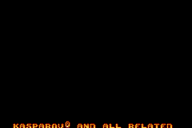

Virtual Kasparov (Europe) (En,Fr,De,Es,It)
EEPROM 4K
Cartridge Identity
- Game Code
AVKP(FamilyAVK)- Header Title
VIRTKASPAROV- Maker / Revision
60/ rev0- ROM Size
- 4.0 MiB (4,194,304 B)
- Save Media
EEPROM 4K- SHA-256
ab7cfe91d9a1f64b5846e1e835436a1fc1ae7f6831d253e4529e873d3179d06e- Engine / SDK Group
comm-042(4 families)
Screenshots

Observed Battery Save Layout
- Fill Byte & Active Size
0xFFfill · 124–124 / 512 B active (entropy 1.66 bits/B)- Active Offset Ranges
0x8–0x2F,0xA6–0xCF,0x146–0x16F(3 total)- ASCII Magic / Headers
- None detected
- Observed Variable Regions
- 0 bytes across 0 spans: None
- Candidate Checksum/Counter Spans
- None
Hardware MMIO Subsystems
ppu_display0x800ec78,0x800eee0,0x800f3ac,0x8015dcc
Regional Variants & Revisions (Family AVK)
- Virtual Kasparov (USA) (En,Fr,De,Es,It) (
AVKE, 4 MiB)